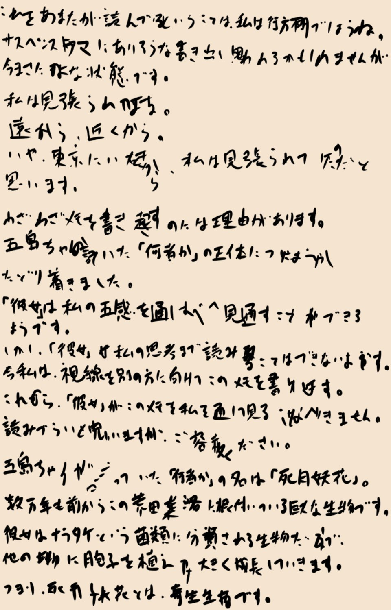

黙示録のラッパ吹き～しょう失～

考えろ、考えるんだ！ 絶対に何か条件があるはずだ……！
アポカリプティックサウンドが鳴る条件、そして死月妖花が動き出す条件。
アポカリプティックサウンドが鳴る条件、そして死月妖花が動き出す条件。
チガ姉のメモには、『死月妖花には知性がない』と書かれていた。
死月妖花に知性がないということは、通常の植物や菌類と同じように、季節や周辺環境にのみ反応して成長や繁殖を行うはずだ。
しかし、今はどうだ？
死月妖花に知性がないということは、通常の植物や菌類と同じように、季節や周辺環境にのみ反応して成長や繁殖を行うはずだ。
しかし、今はどうだ？
video: 豊岳桜.wmv
豊岳駅で私たちを足止めし、古郡先輩に妙な予知をさせ、ここに連れてきた。
これが知性のない者にできることなのだろうか。
仮説の通り、死月妖花に古郡先輩やチガ姉を通して五感をジャックできる能力があるとしてもだ。
五感を知覚するだけでは、認知・思考・行動することはできないはずだ。
死月妖花は何らかの方法で知性を得ている。
これが知性のない者にできることなのだろうか。
仮説の通り、死月妖花に古郡先輩やチガ姉を通して五感をジャックできる能力があるとしてもだ。
五感を知覚するだけでは、認知・思考・行動することはできないはずだ。
死月妖花は何らかの方法で知性を得ている。

確か、その辺のこともチガ姉のメモに書かれていたと思うが……。
チガ姉のメモが『すべて正確な情報』という保証はないが、今はこれ以上の手掛かりがない。
であれば、やはりチガ姉のメモを原点とした推測をしなくてはならない。
チガ姉のメモが『すべて正確な情報』という保証はないが、今はこれ以上の手掛かりがない。
であれば、やはりチガ姉のメモを原点とした推測をしなくてはならない。
と、新村家の玄関から誰かが出てくるのが見える。


「五島！」
「古郡先輩！ 夏菜ちゃんも！」
2人もアポカリプティックサウンドで驚き飛び出してきたのだろうか。
私の姿を確認すると、先輩はすぐに怪音が鳴り響いた空を見上げる。
「古郡先輩！ 夏菜ちゃんも！」
2人もアポカリプティックサウンドで驚き飛び出してきたのだろうか。
私の姿を確認すると、先輩はすぐに怪音が鳴り響いた空を見上げる。

「春花……大丈夫かな……メッセージ送っても返事ないし……。
やっぱり、地下だと電波届かないよね」
――！！
しまった……！ 古郡先輩は新村先輩の行動を知っている！
――！！
しまった……！ 古郡先輩は新村先輩の行動を知っている！

「か、夏菜ちゃん！ しゃべったの！？ 新村先輩のこと、古郡先輩に話したの！？」
私は夏菜ちゃんの両肩をつかんで揺らし、大声で迫る。
「あの……春花ちゃんのことって……？」
「新村先輩が洞窟に行くってこと、しゃべったの！？」
「う、うん……」
私は夏菜ちゃんの両肩をつかんで揺らし、大声で迫る。
「あの……春花ちゃんのことって……？」
「新村先輩が洞窟に行くってこと、しゃべったの！？」
「う、うん……」
なんてことだ……！ アポカリプティックサウンドが鳴ったのは、もしかして……！
夏菜ちゃんを口止めしておかなかった私のミスではあるが、こうも想像以上の早さで事態が変わるとは思わなかった。
古郡先輩にこれ以上、情報を与えるのは危険だ！
夏菜ちゃんを口止めしておかなかった私のミスではあるが、こうも想像以上の早さで事態が変わるとは思わなかった。
古郡先輩にこれ以上、情報を与えるのは危険だ！
「あの、五島……どうしたの！？」
「古郡先輩は家の中にいてください！ もう目も閉じて、耳もふさいでください！」
「あの、えっと……」
こんな説明で理解してもらえないことくらい百も承知だ。
でもその説明をするということは、死月妖花にさらに情報を与えることになる。
「古郡先輩は家の中にいてください！ もう目も閉じて、耳もふさいでください！」
「あの、えっと……」
こんな説明で理解してもらえないことくらい百も承知だ。
でもその説明をするということは、死月妖花にさらに情報を与えることになる。
「いいから先輩、早く来てください！」
強引に古郡先輩の手をつかみ、家の中へと引っ張りこむ。
古郡先輩はいまだに状況を飲み込めていないようだが、そんなことを気にしていられない。
とにかく、古郡先輩はずっと隔離しないといけない。
強引に古郡先輩の手をつかみ、家の中へと引っ張りこむ。
古郡先輩はいまだに状況を飲み込めていないようだが、そんなことを気にしていられない。
とにかく、古郡先輩はずっと隔離しないといけない。

「古郡先輩、いいですか！？
絶っっっ対にこの部屋から出ないでください！」
「えっと……事情は……？」
「それは説明できません！ トイレに行くときは、私に電話して下さい！ 私の付き添いなしで、絶対に部屋から出ないでください！」
「ん……わ、分かったよ……」
「えっと……事情は……？」
「それは説明できません！ トイレに行くときは、私に電話して下さい！ 私の付き添いなしで、絶対に部屋から出ないでください！」
「ん……わ、分かったよ……」
「すみません先輩、今はこうするしかないんです！」
「うん……」
古郡先輩は、心から納得していないだろう。
でも、私がここまで強く言ったなら、古郡先輩もその重要性を認識してくれるはず。
「うん……」
古郡先輩は、心から納得していないだろう。
でも、私がここまで強く言ったなら、古郡先輩もその重要性を認識してくれるはず。
チガ姉の調査では、五感のジャックはできても思考のジャックはできないらしいから、情報さえ与えなければ大丈夫なはずだ。
チガ姉の調査を盲信するわけではないが……。
チガ姉の調査を盲信するわけではないが……。

かといって、古郡先輩をいつまでも部屋に閉じ込めておくのは忍びない。
私もいち早く解決に向けて行動しなくては。
今できることは、チガ姉のメモと本を調査し、さらに仮説を深めて真相へたどり着くことだ。
チガ姉が見つけたものを、私も見つけ出さなくては。
私もいち早く解決に向けて行動しなくては。
今できることは、チガ姉のメモと本を調査し、さらに仮説を深めて真相へたどり着くことだ。
チガ姉が見つけたものを、私も見つけ出さなくては。

新村先輩は大丈夫だろうか。
おばさんも一緒だし大丈夫だとは思うが、古郡先輩がメッセージを送ったと言っても、地下なら連絡は取りづらいだろう。
念のため、連絡してみよう。
おばさんも一緒だし大丈夫だとは思うが、古郡先輩がメッセージを送ったと言っても、地下なら連絡は取りづらいだろう。
念のため、連絡してみよう。
「おかけになった電話は、電波の届かないところに――」
やっぱりダメか……。
ミイラなんてすぐ見つかるものでもないだろうし、チガ姉の手掛かりを見つけたとしたら、まだまだ調査に時間を要するだろう。
私も念のため、メッセージを送っておこう。
やっぱりダメか……。
ミイラなんてすぐ見つかるものでもないだろうし、チガ姉の手掛かりを見つけたとしたら、まだまだ調査に時間を要するだろう。
私も念のため、メッセージを送っておこう。
"色々あって、古郡先輩を部屋に1人でいるように言いました。そちらはどうですか？"
携帯圏内に入れば、先輩は何らかの反応を返してくれるだろう。
危険な目に遭っていなければの話だけど……。
携帯圏内に入れば、先輩は何らかの反応を返してくれるだろう。
危険な目に遭っていなければの話だけど……。

「あの……あの……」
夏菜ちゃんがそっと階段から姿を見せる。
下を向いて、ぼそぼそとつぶやくように、もじもじと。
夏菜ちゃんがそっと階段から姿を見せる。
下を向いて、ぼそぼそとつぶやくように、もじもじと。
「ごめんなさい……」
私が急にあれだけ怒り出したからだろう。
本当であれば、夏菜ちゃんにも口止めはしておくべきだった。
これは、完全に私のミスだ。
私が急にあれだけ怒り出したからだろう。
本当であれば、夏菜ちゃんにも口止めはしておくべきだった。
これは、完全に私のミスだ。
「夏菜ちゃん、私こそごめんね。夏菜ちゃんは何も悪くないから……」
「でも……エリ姉、怒ってた……」
うーん……さすがに肩をつかんであの形相はまずかったかな……。
であれば、ここはフォローするよりも、意識を別に向けてあげた方がいいな。
「でも……エリ姉、怒ってた……」
うーん……さすがに肩をつかんであの形相はまずかったかな……。
であれば、ここはフォローするよりも、意識を別に向けてあげた方がいいな。
「あのね、さっきのはとっても大事なことだったの。
古郡先輩には、今何が起こっているか教えてたら大変なことになるの。
だから、私、ちょっと焦っちゃってね。私も、ごめんね」
「…………」
「それと、夏菜ちゃんにもチガ姉を探す協力をしてほしいの」
「え？」
よし、やっぱりここに反応した。
「…………」
「それと、夏菜ちゃんにもチガ姉を探す協力をしてほしいの」
「え？」
よし、やっぱりここに反応した。

「夏菜ちゃんの力も必要なの。チガ姉は絶対に見つけないといけないから」
「………… うん、頑張る！」
よかった……やっと笑顔に戻ってくれた。
でも、時間は大丈夫かな。
もう小学生は寝た方がいいだろうし。
「………… うん、頑張る！」
よかった……やっと笑顔に戻ってくれた。
でも、時間は大丈夫かな。
もう小学生は寝た方がいいだろうし。
「さあエリ姉！ 何したらいい！？」
夏菜ちゃんはまだまだ大丈夫らしい。
「えっと、さっきの蔵でもう一度調べものしたいの。1人だとちょっと大変だから……」
「オッケー！ 雑用でも肩揉みでもなんでもやるよ！ でもエリ姉、ご飯食べた方がいいんじゃない？ 食べてないの、エリ姉と春花ちゃんだけだよ？」
夏菜ちゃんはまだまだ大丈夫らしい。
「えっと、さっきの蔵でもう一度調べものしたいの。1人だとちょっと大変だから……」
「オッケー！ 雑用でも肩揉みでもなんでもやるよ！ でもエリ姉、ご飯食べた方がいいんじゃない？ 食べてないの、エリ姉と春花ちゃんだけだよ？」
私とあろう者が食事を忘れていた。
さっきのアポカリプティックサウンドでごっそり食欲を持っていかれたが、徹夜になりそうだし、少しでも食べた方がいいだろう。
「うん、じゃあササッと食べて蔵に戻ろう」
「はーい！ 実は私もご飯まだだったんだ！」
さっきのアポカリプティックサウンドでごっそり食欲を持っていかれたが、徹夜になりそうだし、少しでも食べた方がいいだろう。
「うん、じゃあササッと食べて蔵に戻ろう」
「はーい！ 実は私もご飯まだだったんだ！」

居間には誰もいないようだ。

「エリ姉、座ってて、準備するから」
「夏菜ちゃん、料理できるの？」
「料理はできるけど、おばあちゃんとなつみちゃんが作ってくれたみたいだから、今日の分は温めるだけ」
そうか、古郡先輩、おばあさんの夕食の準備手伝うって言ってたな。
古郡先輩……1人で心細いだろうな……。
「夏菜ちゃん、料理できるの？」
「料理はできるけど、おばあちゃんとなつみちゃんが作ってくれたみたいだから、今日の分は温めるだけ」
そうか、古郡先輩、おばあさんの夕食の準備手伝うって言ってたな。
古郡先輩……1人で心細いだろうな……。
いくら古郡先輩が強い人だといっても、そればかりに頼ることなんてできない。
先輩も今は心細いはずだ。早く戻ってあげないと。
先輩も今は心細いはずだ。早く戻ってあげないと。
「あ！ 今日のご飯、いつもと味付けが違う！ これはなつみちゃんが作ったのかな？」
正直、私はたいていのものをおいしく食べられるから、味の違いなんてそこまで分からない。
でも、古郡先輩も少しでも役に立とうと頑張ってくれたのだ。
その味を噛みしめ、活力に換える。
正直、私はたいていのものをおいしく食べられるから、味の違いなんてそこまで分からない。
でも、古郡先輩も少しでも役に立とうと頑張ってくれたのだ。
その味を噛みしめ、活力に換える。
「エリ姉はご飯作れるの？」
「え？ あの、私は、あまり……」
「そうなんだ！ お姉ちゃんと同じだ！ お姉ちゃん、好き嫌いなくて何でも食べちゃうから、しょっぱ過ぎたり辛すぎたりしなければ、まずいと思わないんだって」
そう言えば、チガ姉もかなりの量食べられるって言ってたっけ。
「え？ あの、私は、あまり……」
「そうなんだ！ お姉ちゃんと同じだ！ お姉ちゃん、好き嫌いなくて何でも食べちゃうから、しょっぱ過ぎたり辛すぎたりしなければ、まずいと思わないんだって」
そう言えば、チガ姉もかなりの量食べられるって言ってたっけ。
「それ分かるなあ。出された食べ物は死んでも残すなって、親に言われてたから。
だから、自分が作る料理の味も、なんか受けが悪いんだよねえ。
私は平気なんだけど……」
「『おいしい』のストライクゾーンが広いってこと？」
「そうそう、それ！ 夏菜ちゃん小学生なのに語彙力、達者だね！」
「あはは！ ゴイリョク、すごいよ！」
「『おいしい』のストライクゾーンが広いってこと？」
「そうそう、それ！ 夏菜ちゃん小学生なのに語彙力、達者だね！」
「あはは！ ゴイリョク、すごいよ！」
「夏菜ちゃんもしかして、国語得意なの？」
「うーん国語よりも理科とか体育の方が好き！ ほら、この辺、山だらけだから、いろんな生き物とか植物がいるでしょ？ だから理科もすらすら分かるんだ！」
生き物と植物が豊富な山――。
それが今、まさに音を立てて壊れ始めている。
「うーん国語よりも理科とか体育の方が好き！ ほら、この辺、山だらけだから、いろんな生き物とか植物がいるでしょ？ だから理科もすらすら分かるんだ！」
生き物と植物が豊富な山――。
それが今、まさに音を立てて壊れ始めている。
あの一瞬で枯れてしまった木々が死月妖花の仕業だとしたら、これからもっと恐ろしいことが起こる可能性だってある。
あの教典に基づくなら、この程度では済まないはず。
あの教典に基づくなら、この程度では済まないはず。
何が起こるのだろうか。
植物も水も枯れるのだろうか。
それとも、山が崩れ、土地そのものが壊れてしまうのだろうか。
あるいは、元木町にまで被害が……。
植物も水も枯れるのだろうか。
それとも、山が崩れ、土地そのものが壊れてしまうのだろうか。
あるいは、元木町にまで被害が……。
ダメだ、今はいやな想像しかできない。
それはこれから調べるべきことだ。
恐怖に任せて変な想像をするんじゃない！ 希望を持て！
それはこれから調べるべきことだ。
恐怖に任せて変な想像をするんじゃない！ 希望を持て！
「エリ姉、大丈夫？」
また、顔に出てしまったか……。
「うん、大丈夫！ 夏菜ちゃんは体育も得意なんだね！」
「そうだよ！ 私、6年生よりも足が速いんだ！」
「へえ、それはすごい！」
また、顔に出てしまったか……。
「うん、大丈夫！ 夏菜ちゃんは体育も得意なんだね！」
「そうだよ！ 私、6年生よりも足が速いんだ！」
「へえ、それはすごい！」
小学生女子と言えば、好きなタイプは『足が速い人』って言うのが定石だ。
無論、私の小学生時代は寂しいボッチ生活だったからその辺は意識したことはないが、夏菜ちゃんはどうなのだろう。
無論、私の小学生時代は寂しいボッチ生活だったからその辺は意識したことはないが、夏菜ちゃんはどうなのだろう。
「でも、それだと好きな男子とかいないんじゃない？
やっぱり足の速い人が好きでしょ？」
「………… なに？ それ……」
え？ 私が高校生になる間に、小学生の恋愛トレンドは変わったの？
「………… なに？ それ……」
え？ 私が高校生になる間に、小学生の恋愛トレンドは変わったの？
「みんなは足が速い人が好きって言うけど、そんなの全然ダメ！
やっぱり、ちゃんと稼ぎがあって、家族計画を立てられる人じゃないと。
黙って借金したり、外で何して遊んでるんだか分からないような人は論外！ 誠実な男が1番だって！」
「お、おお……そうっすね……」
あまりにも堅実的で歳不相応な返事をする夏菜ちゃん。
「お、おお……そうっすね……」
あまりにも堅実的で歳不相応な返事をする夏菜ちゃん。
「で、でもさ、小学生だと働いたり家族計画立てたりする人っていないよね……？」
「あったりまえじゃん！ 小学生にそんなの期待しないって！」
「え、もしかして、おじさん好きとか……？」
「あったりまえじゃん！ 小学生にそんなの期待しないって！」
「え、もしかして、おじさん好きとか……？」
「違うって、男がどんな人になるかなんて、女の人次第だよ？
ほら、付き合う男がみんなダメ男って人、いるでしょ？」
「聞いたことはあるよ、男運がない女の人でしょ？」
「聞いたことはあるよ、男運がない女の人でしょ？」
「そうそう、でもね、あれはたいてい女が悪いんだって。
男を甘やかしたり尽くしすぎたりするから、男を堕落させるんだって。
ほら、傾国の美女っているでしょ？ 王様が好きな人のために国のお金をどんどん使って国を傾かせちゃうの。
どんな男になるかは、女次第だよ？
旦那様をいかに上手に支えておだてられるかが、女の腕の見せ所よね！」
「そ、そうなんですか……」
「男はプライドの高い生き物だからねえ。 ちゃんとおだてながら正しい方へ導いてあげないと、旦那ともども破綻しちゃうからね」
「あの……そういうの、どこで覚えてくるんですか……？」
「男はプライドの高い生き物だからねえ。 ちゃんとおだてながら正しい方へ導いてあげないと、旦那ともども破綻しちゃうからね」
「あの……そういうの、どこで覚えてくるんですか……？」
「ネット小説だよ？
おばあちゃんがネットとか詳しいから、私も教えてもらいながら色々見てるんだー！
まあそもそもこの程度考えられないようじゃ、男運どうこう以前に女として思慮が足りないよね」
何だろう……。私は何も悪口を言われていないし、夏菜ちゃんの言葉にもさほど嫌味はない。
でも、この敗北感は何なんのだろうか。
もう……この話題はつらい……。
でも、この敗北感は何なんのだろうか。
もう……この話題はつらい……。
「そ、そんなことより、早く蔵に戻らないとね！ はい、ごちそさまー！」
「あれ？ エリ姉、すごい少食だね……」
「そ、そうかな！？ やっぱり食べ過ぎると眠くなっちゃうからね、ほどほどにしないと！ あ、夏菜ちゃんはゆっくり食べてて！ 先に蔵に行ってるから！」
「あ、待って！ 私も行く！」
「あれ？ エリ姉、すごい少食だね……」
「そ、そうかな！？ やっぱり食べ過ぎると眠くなっちゃうからね、ほどほどにしないと！ あ、夏菜ちゃんはゆっくり食べてて！ 先に蔵に行ってるから！」
「あ、待って！ 私も行く！」
この後、夏菜ちゃんの恋愛講義が再開されることはなく、2人でお皿を洗って新村家を後にした。
「夏菜ちゃん、眠くない？ もうすぐ9時だよ？」
「うーん……何かあまり眠くなくてさ……」
「チガ姉が心配？」
「うん……」
「もし作業中に眠くなったら、寝ていいからね。ご飯と睡眠は1番大事だから」
「じゃあ、毛布とか持ってくるよ。エリ姉も眠くなったら、すぐ休めるようにね」
「うーん……何かあまり眠くなくてさ……」
「チガ姉が心配？」
「うん……」
「もし作業中に眠くなったら、寝ていいからね。ご飯と睡眠は1番大事だから」
「じゃあ、毛布とか持ってくるよ。エリ姉も眠くなったら、すぐ休めるようにね」
夏菜ちゃんはもう一度家に戻っていった。
私は先に蔵の方へ向かっておこうか。
私は先に蔵の方へ向かっておこうか。
歩きながら、考える。
何だろう……何か、変な感じ……。
そりゃ、常識ではありえないことがあちこちで起こっているのだから、変な感じがするのは当たり前だ。
でも、今感じているのはそうではない。
常識の範囲内で、妙に変な感じ。
何だろう……何か、変な感じ……。
そりゃ、常識ではありえないことがあちこちで起こっているのだから、変な感じがするのは当たり前だ。
でも、今感じているのはそうではない。
常識の範囲内で、妙に変な感じ。
この超自然的現象に紛れて、こっそりと手を回している人がいるような……。
これは本当に死月妖花だけの仕業なのだろうか。
もし私が死月妖花だったら……。
これは本当に死月妖花だけの仕業なのだろうか。
もし私が死月妖花だったら……。
うん、住人の中にスパイを作る。
いくら死月妖花が人知を超える存在だとしても、好き勝手なんでもありというわけでもないだろう。
スパイを送り込んだ方が何かと都合がいいはず。
いくら死月妖花が人知を超える存在だとしても、好き勝手なんでもありというわけでもないだろう。
スパイを送り込んだ方が何かと都合がいいはず。
はっきりとは分からないけど、今違和感を覚えるのは、新村先輩たちの行動だ。


これは、新村先輩たちが怪しいと言うわけではない。
2人が出発してから、もう1時間近く経っている。
おそらく、例の地下で何かを発見したのだろう。
でなければ、こんなに遅くなることもないだろうし……。
いや、もし死月妖花に洞窟探索のことを知られたとしたら、2人に何らかの妨害をしたのかもしれない。
2人が出発してから、もう1時間近く経っている。
おそらく、例の地下で何かを発見したのだろう。
でなければ、こんなに遅くなることもないだろうし……。
いや、もし死月妖花に洞窟探索のことを知られたとしたら、2人に何らかの妨害をしたのかもしれない。
ここは3つに1つ、新村先輩たちはさらなる調査を続けているのか、それとも危険な目に遭ったのか、あるいはその両方。
もしかすると、ここにスパイの妨害行為が働いているかもしれない。
敵は死月妖花だけとは限らない。
新村先輩が調査中に集落内の誰かと接触していたとすれば……。
この辺も十分に気をつけなくては。
もしかすると、ここにスパイの妨害行為が働いているかもしれない。
敵は死月妖花だけとは限らない。
新村先輩が調査中に集落内の誰かと接触していたとすれば……。
この辺も十分に気をつけなくては。
そして古郡先輩が洞窟調査を知った瞬間にアポカリプティックサウンドが鳴り響いた。
これはつまり、洞窟を調査されることは死月妖花にとって不利であることの表れだ。
そうだ、その理屈なら、五感ジャックを逆手に取ることが可能だ。
これはつまり、洞窟を調査されることは死月妖花にとって不利であることの表れだ。
そうだ、その理屈なら、五感ジャックを逆手に取ることが可能だ。
つまり、古郡先輩に偽の情報を与えることで、死月妖花を混乱させることもできるのではないだろうか。
アポカリプティックサウンドが鳴るということは、死月妖花が何らかの行動を起こす、すなわち私たちの行動に反応したことを意味する。
アポカリプティックサウンドが鳴るということは、死月妖花が何らかの行動を起こす、すなわち私たちの行動に反応したことを意味する。
死月妖花のスパイについての考察、そして古郡先輩を通じて死月妖花を騙す方法。
ここから作戦を立てるのも悪くない。
ここから作戦を立てるのも悪くない。
さて、そろそろ蔵に着く。
同じ新村家の敷地内なのに、考えながら歩くと、自然と歩行速度が遅くなるな……。
同じ新村家の敷地内なのに、考えながら歩くと、自然と歩行速度が遅くなるな……。
…………？
………… …………！！
煙の臭い！
蔵の扉からもうもうと黒い煙が噴き出している。
2階の窓からは、揺らめく赤い光が漏れている。
蔵が、燃えている……！
………… …………！！
煙の臭い！
蔵の扉からもうもうと黒い煙が噴き出している。
2階の窓からは、揺らめく赤い光が漏れている。
蔵が、燃えている……！
「火事！ 火事だー！」
声の限り叫び、応援を呼ぶ。
私の声に反応し、すぐにおばあさんや幸太郎さん、夏菜ちゃんが飛び出してくる。
声の限り叫び、応援を呼ぶ。
私の声に反応し、すぐにおばあさんや幸太郎さん、夏菜ちゃんが飛び出してくる。
「古郡先輩！ 火事です！ すぐに家から出て下さい！」
「わ、分かった！」
家にまで延焼する可能性がある今、古郡先輩をこれ以上部屋に押し込めることもできない。
「わ、分かった！」
家にまで延焼する可能性がある今、古郡先輩をこれ以上部屋に押し込めることもできない。
集落中の人が集まり、蔵の鎮火を試みる。
私と古郡先輩は夏菜ちゃんに案内され、集会場の辺りまで避難した。
徐々に空を焼く紅色と煙が薄くなっていく。
どうやら、火の勢いは収まってきているようだ。
私と古郡先輩は夏菜ちゃんに案内され、集会場の辺りまで避難した。
徐々に空を焼く紅色と煙が薄くなっていく。
どうやら、火の勢いは収まってきているようだ。

「五島……これも私のせい……？
ネクロが、蔵を燃やしたの……？」
ネクロ――死月妖花の仕業……？
違う……これは人間の手による放火だ！
やっぱり死月妖花のスパイがいるんだ！
ネクロ――死月妖花の仕業……？
違う……これは人間の手による放火だ！
やっぱり死月妖花のスパイがいるんだ！
外側は燃えずに中から煙が上がり、2階から火の光が見えていた。
これは、誰かが意図的に2階に火を放ったのだ。
目的はおそらく、死月妖花につながる資料を根こそぎ焼失させること。
これは、誰かが意図的に2階に火を放ったのだ。
目的はおそらく、死月妖花につながる資料を根こそぎ焼失させること。
鍵は新村先輩が持ち出していたから、施錠することはできなかった。
誰かが蔵に忍び込み、わざわざ2階にまで上がって火をつけたのだ。
それに、猛き音がなかったということは、死月妖花の動きによるものでもない。
誰かが…… 誰かが、私たちの妨害をしている……！
誰かが蔵に忍び込み、わざわざ2階にまで上がって火をつけたのだ。
それに、猛き音がなかったということは、死月妖花の動きによるものでもない。
誰かが…… 誰かが、私たちの妨害をしている……！
Read ✓ Next in this arc →